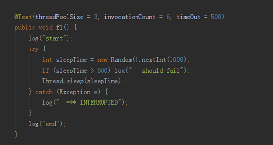
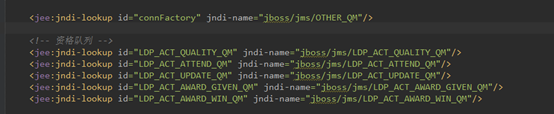
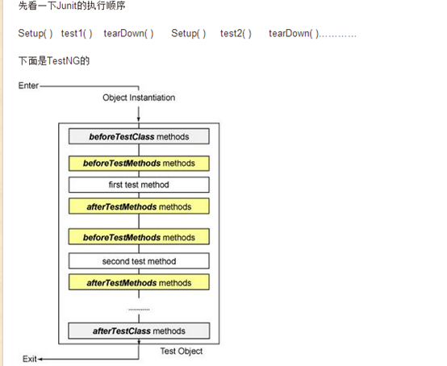

单元测试实践
1 测试的目标
编写有效的测试保证代码的质量；对代码的质量能够度量，因为能够度量才能管理。
2 测试原则和理念
测试你的意图，而不是实际代码。
测试需要精心设计，它和开发一样重要。
测试和开发不需要同一个人，因为测试的是意图。
测试是提高了质量和降低了维护成本，而不是开发成本。
测试成本和时间需要进行权衡。
测试代码容易编写、容易执行、容易维护。
测试会增强你的信心，努力增强你的信心。
3 测试范围
3.1 测试的范围
单元测试、接口测试、集成测试、系统测试
这些测试只是粒度不一样，尽可能忽略这些复杂的定义，定义有效的测试，减少重复测试。关注测试的有效性，而不是单元的粒度或者集成的规模。
3.2 常见错误
3.3 容易出错的测试点
输入最复杂
第三方的输出都要谨慎处理
第三方接口
并发
异常
关键点性能
4 测试方法和测试用例设计
4.1 好的方式
优先使用黑盒测试，白盒测试作为补充。
自上而下测试，还是自下而上的测试，根据情况选择。
认真对待输入和输出，测试用例需要覆盖判定条件。
4.2 常见的错误方式
没有自动测试
发现问题通常通过debug调试
有测试经常打印出来，需要人工对比。
好像通了，实际上没有严禁的测试用例
5 测试实践
本文的示例代码在:
https://github.com/superproxy/sample-test
5.1 基本测试
我们以testng为基本的测试工具，testng提供了断言方式，如果没有满足条件，则抛出异常。
参考资料
Testng官网 http://testng.org/
Testng教程 http://testng.org/doc/documentation-main.html
5.1.1 简单测试
5.1.2 忽略测试
5.1.3 依赖测试
5.1.4 分组
5.1.5 异常
5.1.6 多线程

5.2 数据集测试
5.2.1 方式一
5.2.2 方式二
使用testng提供的dataProvider方式
5.2.3 方式三
使用jar包test-data-provider，支持从csv，json文件中读取文件内容。
<dependency>
<groupId>com.github.superproxy</groupId>
<artifactId>test-data-provider</artifactId>
<version>0.1.0</version>
</dependency>
1. 编写文件csv文件，csv文件最好使用gbk
2.使用Csv注解，然后设置文件的路径，目前不支持默认路径
5.3 Mock模拟测试
mock测试就是在测试过程中，对于某些不容易构造或者 不容易获取的对象，用一个虚拟的对象来创建以便测试的测试方法。
Mock测试框架推荐使用mockito。
参考资料：
Mockito官网 http://site.mockito.org/
Mockito 教程 https://github.com/mockito/mockito/wiki/FAQ
5.3.1 Mock基本使用方式
5.3.1.1 方式1

上面的示例模拟了jdk提供的集合接口List。当调用list.get(0)，获取集合中第一个元素，返回1。
5.3.1.2 方式2
5.3.1.3 方式3
Spring 配置
5.3.2 Mock void返回
直接调用方法，没有异常。
5.3.3 重量级对象模拟
Spring TEST支持的 MOCK对象
5.3.4 MOCK JNDI
通过不同的配置文件加载不同的资源
5.3.5 Mock EJB
参考
http://mockejb.sourceforge.net/
5.3.6 Mock ESB
使用的注解，直接mock就可以了
service.setHttpService(Mockito.mock(B2CAccountMgmtHttpService.class));
配置文件单独配置
5.3.7 Mock RSF
改为
如果Rsf使用 @Reference引用
使用的注解，直接mock就可以了
service.setRsfService(Mockito.mock(RsfService.class));
5.3.8 Mock MQ

同样使用不同的资源文件

对jndi资源进行包装
5.4 典型场景的测试方法
5.4.1 测试controller
异常情况测试
5.4.2 测试service
中间层Mock测试
5.4.3 测试dao
5.4.3.1 直接操作数据库
5.4.3.2 使用dbunit+springtestdbunit进行操作
1. 自动插入数据集
Users.xml内容
2. 数据集自动比较
初始化的数据集合，执行操作之后，期望的数据集合。
5.4.4 测试工具类
慎用powermock，当需要使用powermock来mock一个private函数，或者全局变量，或者静态函数
时候，要想着有更好的模式来支持mockito的功能，而不是来模拟。
示例代码路径
https://github.com/superproxy/sample-test
FINAL测试
http://www.codeproject.com/Articles/806508/Using-PowerMockito-to-Mock-Final-and-Static-Method
5.5 性能测试
参考资料
http://stamen.iteye.com/blog/1485837
http://www.ibm.com/developerworks/cn/java/j-cq11296.html
6 测试结果展示
6.1 本地测试
6.1.1 单元测试执行情况
6.1.2 整体包测试覆盖率
6.1.3 行和分支包测试覆盖率
6.2 Sonar展示
6.3 完整测试
6.4 没有测试
6.5 分支部分测试
7 测试工具
7.1 TestNG

TSTNG优点： 其实发展到现在相差不大
从junit到testng
https://developers.opengamma.com/blog/2011/04/04/converting-opengamma-junit-testng
TesgNG为什么更好
http://www.ibm.com/developerworks/cn/java/j-cq08296/
http://beust.com/weblog2/archives/000369.html
7.1.1 启动testng
7.1.1.1 命令行
7.1.1.2 Mvn集成
http://maven.apache.org/surefire/maven-surefire-plugin/examples/testng.html
7.1.2 Spring集成
Spring 2.5 以后，就开始支持 TestNG 了，支持的方法包括：
将您的 TestNG 测试类继承 Spring 的测试父类：AbstractTransactionalTestNGSpringContextTests 或者 AbstractTestNGSpringContextTests，这样您的 TestNG 测试类内部就可以访问 applicationContext 成员变量了
不继承 Spring 父类，在测试类上使用 @TestExecutionListeners 注释标签，可以引入的监听器包括
DependencyInjectionTestExecutionListener：使得测试类拥有依赖注入特性
DirtiesContextTestExecutionListener：使得测试类拥有更新 applicationContext 能力
TransactionalTestExecutionListener：使得测试类拥有自动的事务管理能力
这里我们演示一下如何使用 Spring 提供的 TestNG 父类来进行测试。
7.1.3 Testng和maven集成
测试报告
http://maven.apache.org/surefire/maven-surefire-plugin/
surefire插件
http://maven.apache.org/surefire/maven-surefire-plugin/
7.1.4 Maven Surefire Plugin
The Surefire Plugin is used during the test phase of the build lifecycle to execute the unit tests of an application. It generates reports in two different file formats:
· Plain text files (*.txt)
· XML files (*.xml)
By default, these files are generated at ${basedir}/target/surefire-reports.
For an HTML format of the report, please see the Maven Surefire Report Plugin.
http://maven.apache.org/surefire/maven-surefire-report-plugin/
7.1.5 Mvn surefire 和testng集成原理
Surefire在maven test过程中触发
查找测试包是否包含 testngjar
自动执行 src/test/java下面 *Test.java文件
http://maven.apache.org/surefire/maven-surefire-plugin/examples/inclusion-exclusion.html
8 测试覆盖率工具
代码覆盖率测试的工具，比较常用的如下：
（1）开源：
JaCoCo http://www.eclemma.org/jacoco/
Cobetura http://cobertura.sourceforge.net/
Emma http://emma.sourceforge.net/
（2）商用：
Clover http://www.atlassian.com/software/clover/overview
http://www.sonarqube.org/pick-your-code-coverage-tool-in-sonar-2-2/
8.1 Jacobo
Since version 2.0 EclEmma is based on the JaCoCo code coverage library. The Eclipse integration has its focus on supporting the individual developer in an highly interactive way. For automated builds please refer to JaCoCo documentation for integrations with other tools.
Originally EclEmma was inspired by and technically based on the great EMMA library developed by Vlad Roubtsov.
mvn clean org.jacoco:jacoco-maven-plugin:prepare-agent install -Dmaven.test.failure.ignore=true
mvn sonar:sonar
这步必须
org.jacoco:jacoco-maven-plugin:prepare-agent
mvn clean jacoco:prepare-agent install jacoco:report
与IDE集成
EclEmma
8.2 Cobertura
8.2.1 与maven集成
8.2.2 支持的命令
cobertura:check Check the coverage percentages for unit tests from the last instrumentation, and optionally fail the build if the targets are not met.
cobertura:check-integration-test Check the coverage percentages for unit tests and integration tests from the last instrumentation, and optionally fail the build if the targets are not met.
cobertura:clean Clean up the files that Cobertura Maven Plugin has created during instrumentation.
cobertura:dump-datafile Output the contents of Cobertura's data file to the command line.
cobertura:instrument Instrument the compiled classes.
cobertura:cobertura Instrument the compiled classes, run the unit tests and generate a Cobertura report.
cobertura:cobertura-integration-test Instrument the compiled classes, run the unit tests and integration tests and generate a Cobertura report.
参考文档
http://cobertura.github.io/cobertura/
http://www.mojohaus.org/cobertura-maven-plugin/
http://www.mojohaus.org/cobertura-maven-plugin/usage.html
8.2.3 和IDE集成
8.2.4 与jenkins集成
https://wiki.jenkins-ci.org/display/JENKINS/Cobertura+Plugin
https://wiki.jenkins-ci.org/display/JENKINS/Clover+Plugin
8.2.5 与sonar集成
插件
http://docs.sonarqube.org/display/PLUG/Cobertura+Plugin
http://docs.sonarqube.org/display/PLUG/Clover+Plugin
8.2.6 Installation
1. Install the plugin through the Update Center or download it into the SONARQUBE_HOME/extensions/plugins directory
2. The default location of the XML Cobertura report is : target/site/cobertura/coverage.xml . You can change it in Configure in the Settings > General Settings > Java > Cobertura page
3. Restart the SonarQube server
http://docs.sonarqube.org/display/PLUG/Code+Coverage+by+Unit+Tests+for+Java+Project
8.2.7 Usage
· Build the project and execute the unit tests:
· mvn clean compile
· mvn cobertura:cobertura 注意
· mvn cobertura:cobertura -Dcobertura.report.format=xml 默认的不知sar方式
· Analyze the project with SonarQube using Maven:
mvn sonar:sonar
8.2.8 mvn配置支持sonar

参考：
8.3 Clover
Why does Clover use source code instrumentation?
Possible feature | JVMDI/PI | Bytecode instrumentation | Source code instrumentation |
Gathers method coverage | yes | yes | yes |
Gathers statement coverage | line only | indirectly | yes |
Gathers branch coverage | indirectly | indirectly | yes |
Can work without source | yes | yes | no |
Requires separate build | no | no | yes |
Requires specialised runtime | yes | yes | no |
Gathers source metrics | no | no | yes |
View coverage data inline with source | not accurate | not accurate | yes |
Source level directives to control coverage gathering | no | no | yes |
Control which entities are reported on | limited | limited | yes |
Compilation time | no impact | variable | variable |
Runtime performace | high impact | variable | variable |
Container friendly | no | no | yes |
8.3.1 clover和maven集成
mvn clean clover2:setup test clover2:aggregate clover2:clover
There are four basic parts executed when recording code coverage with Clover.
1. The clover2:setup goal will instrument your Java source files.
2. The test phase is Maven 2 and 3's standard command for running a unit test phase.
3. The clover2:aggregate goal is used for merging coverage data generated by multi-module projects.
4. The clover2:clover goal generates an HTML, XML, PDF or JSON report.
8.3.2 和sonar集成
8.3.3 Clover和IDE集成
8.3.3.1 下载
https://www.atlassian.com/software/clover/download
https://www.atlassian.com/software/clover/downloads/binary/clover-idea-4.0.5.jar
https://downloads.atlassian.com/software/clover/downloads/clover-idea-4.0.5.jar
8.3.3.2 使用
参考：
https://confluence.atlassian.com/display/CLOVER/1.+Clover+for+IDEA+in+10+minutes
http://blog.csdn.net/yanmingming1989/article/details/8557981
http://www.taobaotest.com/blogs/qa?bid=6425
https://confluence.atlassian.com/pages/viewpage.action?pageId=79986998
https://confluence.atlassian.com/display/CLOVER/Clover-for-IDEA+Installation+Guide
https://docs.atlassian.com/maven-clover2-plugin/latest/#instrument-mojo.html
8.3.4 与jenkins集成
https://wiki.jenkins-ci.org/display/JENKINS/Clover+Plugin
9 其他测试工具
9.1 JTest
Jtest 一体化的软件，支持findbug、junit 、catus等功能
such as static analysis, peer review, unit testing, coverage analysis, and runtime error detection
参考资料
http://www.ibm.com/developerworks/cn/java/j-lo-jtest/
https://www.parasoft.com/product/jtest/
9.2 Unitils
整合了几个测试框架，但是整合的粒度和支持情况并不理想，支持的框架有限，需要单独学习。成本比较高。
没有对mockito整合
没有对testng整合
Db测试只是整合了dbunit，不如直接使用方便。
参考资料
http://www.unitils.org/summary.html
9.3 DbUnit
http://dbunit.sourceforge.net/
DbUnit is a JUnit extension
DbUnit has the ability to export and import your database data to and from XML datasets. Since version 2.0, DbUnit can also work with very large datasets when used in streaming mode. DbUnit can also help you to verify that your database data match an expected set of values.
10 常见错误
10.1 没有配置文件
10.2 没有测试结果
是否提交到sonar:sonar上，另外检查测试报告是否正确。
10.3 版本兼容问题
Mockito和powermock
11 参考文献
11.1 文档
软件测试的艺术
有效的单元测试
TestNG http://testng.org/doc/index.html
代码覆盖率 http://www.cnblogs.com/coderzh/archive/2009/03/29/1424344.html
Mock对比 http://www.ibm.com/developerworks/cn/java/j-lo-powermock/
http://blog.csdn.net/ht99582/article/details/43152921
http://blog.csdn.net/ht99582/article/details/43152921
http://jinnianshilongnian.iteye.com/blog/2108400
http://jinnianshilongnian.iteye.com/blog/2108400
http://jinnianshilongnian.iteye.com/blog/2106184
http://rensanning.iteye.com/blog/2002371
http://www.blogjava.net/gentoo1439/archive/2007/07/29/133055.html
http://book.51cto.com/art/201203/321054.htm
http://www.eclemma.org/jacoco/index.html
http://liangruijun.blog.51cto.com/3061169/803473/
http://www.sonarqube.org/unit-test-execution-in-sonarqube/
11.2 代码
Spring测试
Common util测试
Testing junit测试
https://github.com/cbeust/testng/tree/master/src/test/java
Petshop测试
http://www.open-open.com/lib/view/open1439793373083.html